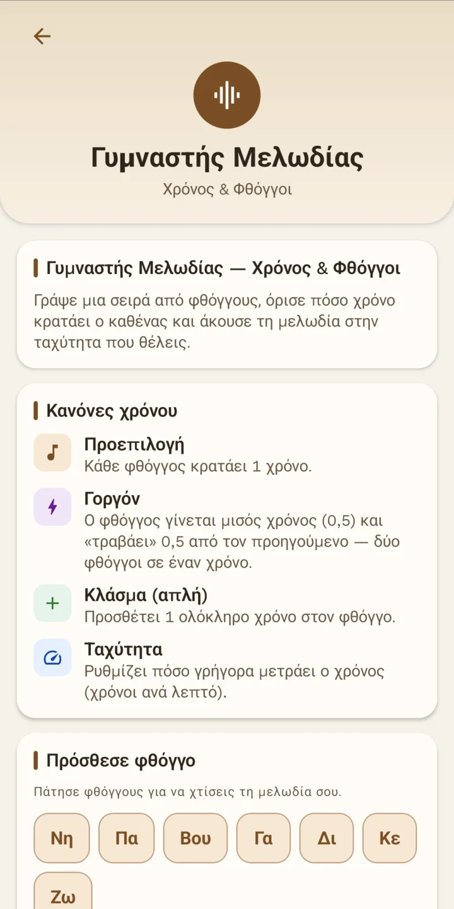
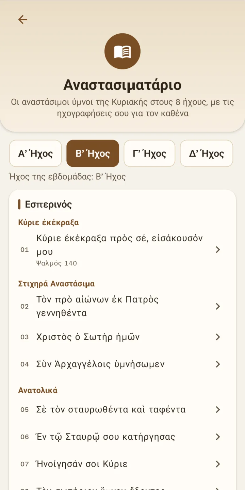

Βυζαντινή μουσική βήμα-βήμα, στο κινητό σου
Εφαρμογή Android για να μάθεις να διαβάζεις και να ψάλλεις: θεωρία, οι 8 ήχοι με ισοκράτημα, ηχογράφηση και ανάλυση της φωνής σου, ημερολόγιο ήχων και ψηφιακό αναλόγιο. Στα ελληνικά και στα αγγλικά.
Λήψη APK από το GitHub
Σύντομα στο Google Play
Android 7.0 ή νεότερο. Δωρεάν και ανοιχτού κώδικα. Όλες οι εκδόσεις και οι αλλαγές
- Χωρίς internet
- Χωρίς διαφημίσεις
- Χωρίς λογαριασμό
Τι θα βρεις μέσα
Όλα δουλεύουν στη συσκευή σου, χωρίς σύνδεση.
-

8 ΉχοιΚλίμακες, διαστήματα, απηχήματα και καταλήξεις για κάθε ήχο. -

ΙσοκράτημαΣταθερό ίσο για να ψάλλεις από πάνω, και στο παρασκήνιο. -

Γυμναστής μελωδίαςΓράψε φθόγγους, όρισε τον χρόνο τους και άκου τη μελωδία. -

ΑναστασιματάριοΟι αναστάσιμοι ύμνοι της Κυριακής στους 8 ήχους. -

ΗμερολόγιοΟ ήχος της εβδομάδας για κάθε ημερομηνία. -

Ψηφιακό αναλόγιοΤα PDF σου, με το ίσο κάθε σελίδας.
Τα δεδομένα σου μένουν στη συσκευή σου
Η εφαρμογή δεν έχει άδεια πρόσβασης στο internet, δεν ζητά λογαριασμό και δεν περιέχει διαφημίσεις ή εργαλεία στατιστικών. Το μικρόφωνο χρησιμοποιείται μόνο όταν το ξεκινάς εσύ, και ο ήχος επεξεργάζεται μόνο στο κινητό σου. Ούτε αυτή η σελίδα χρησιμοποιεί cookies ή analytics.